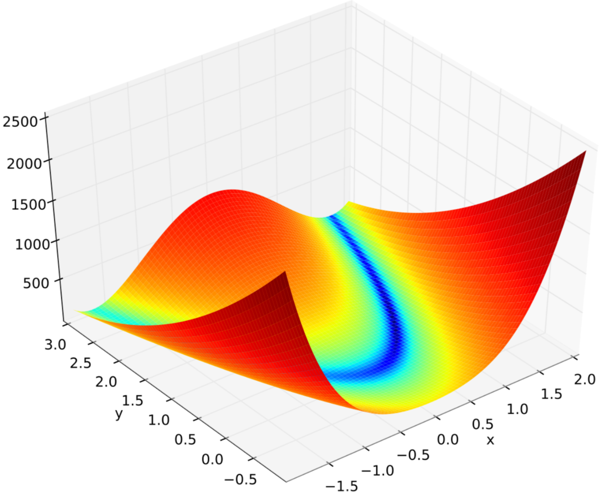
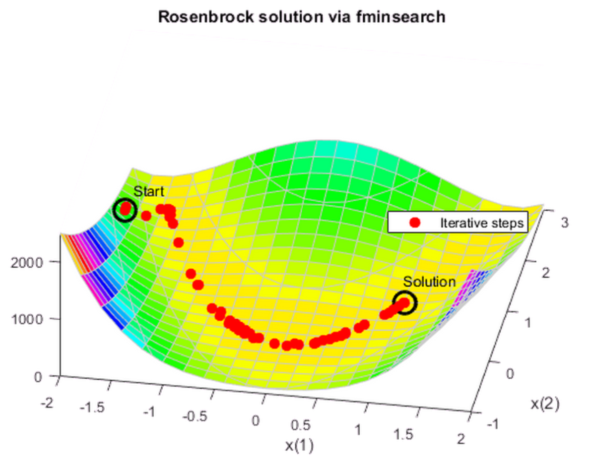
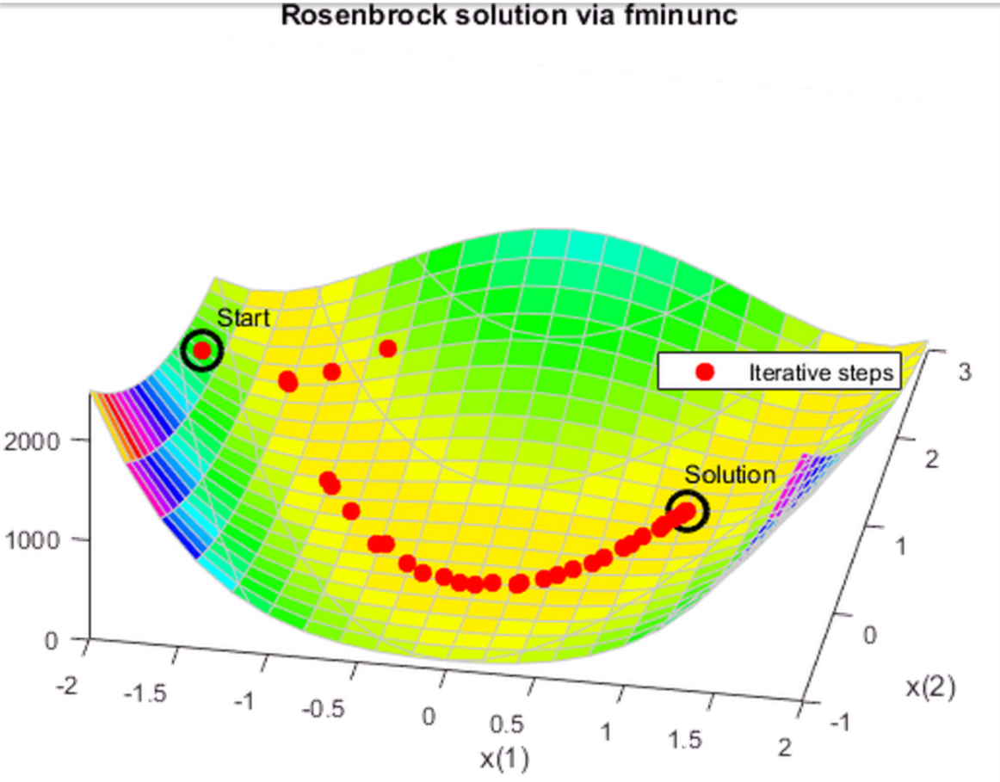
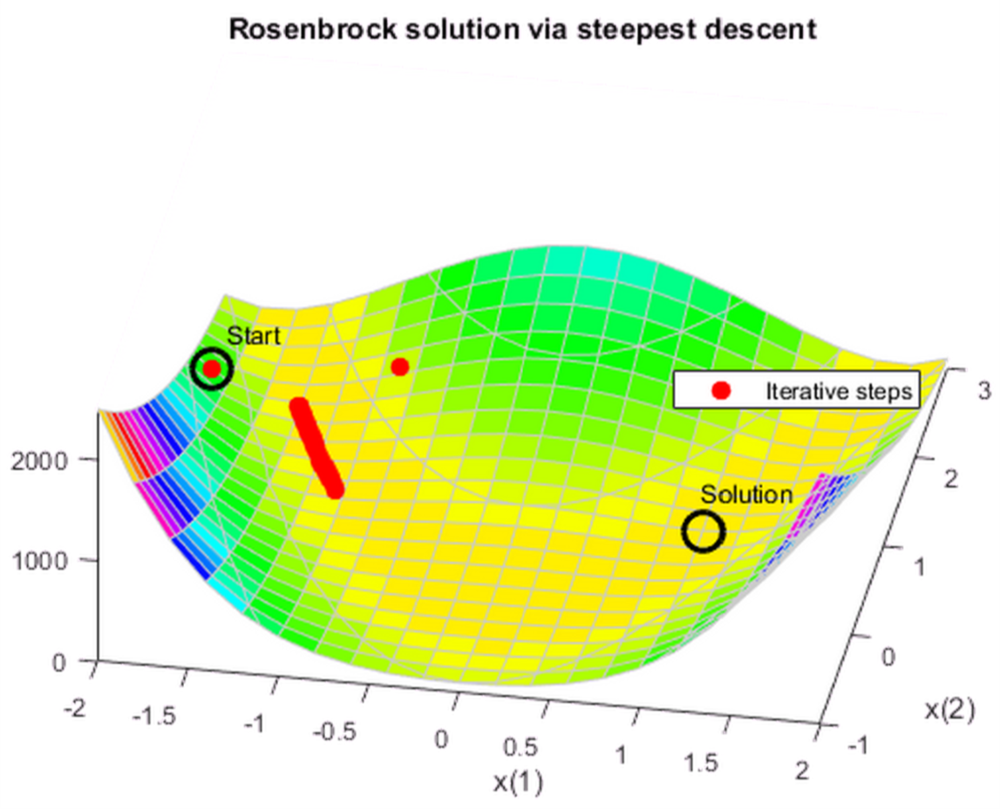
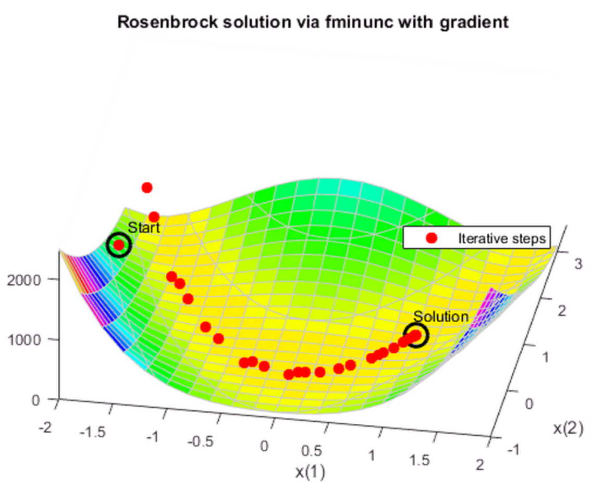
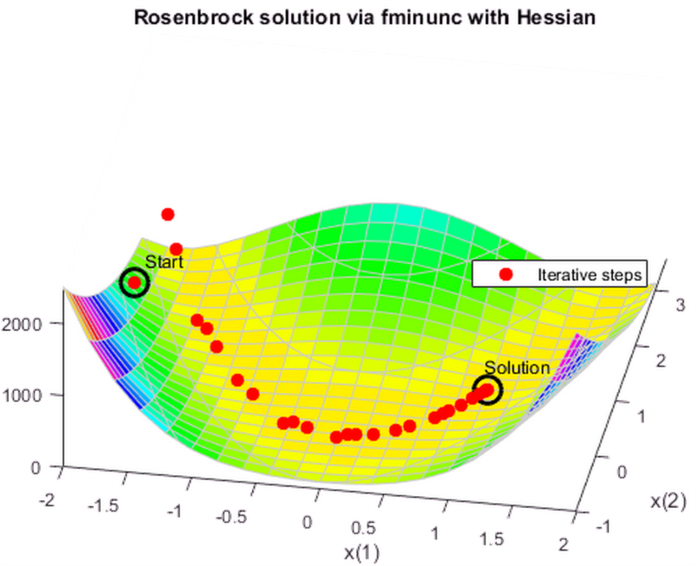
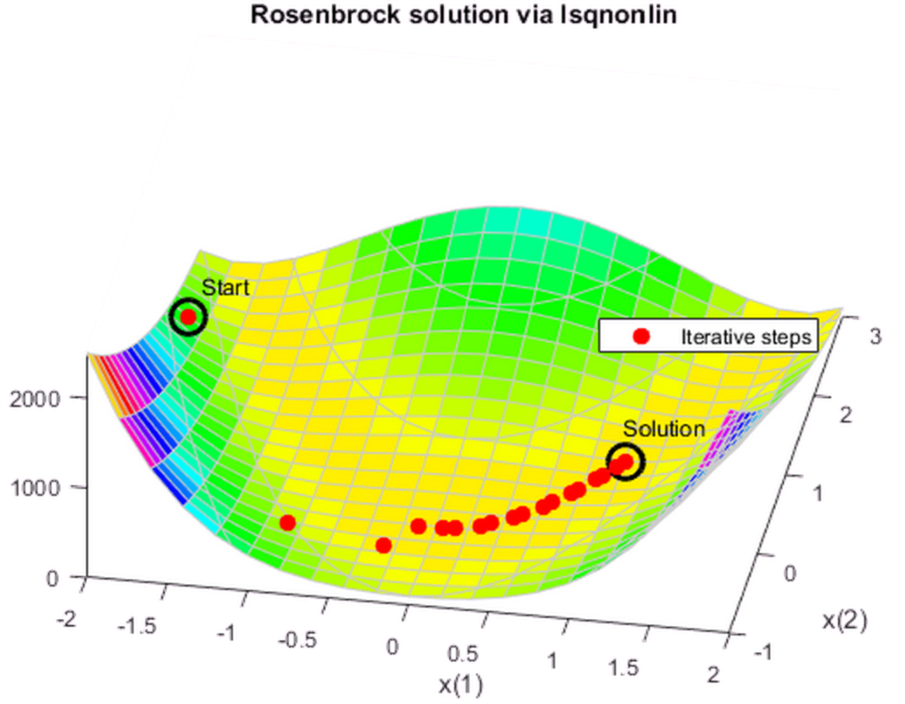
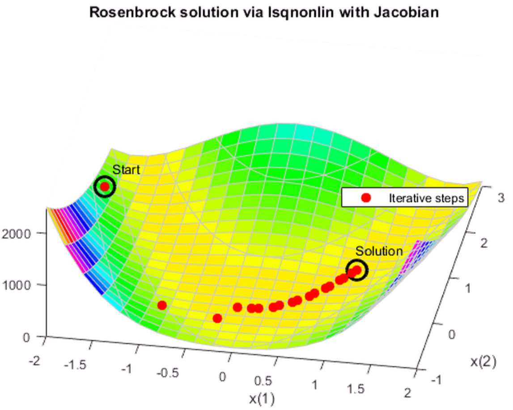

Rosenbrock 香蕉函数的优化
目录
1 简介
在数学最优化过程中，Rosenbrock函数是一个用来测试最优化算法性能的非凸函数，matlab称这个函数为香蕉函数。这个函数的定义为：
\begin{equation} \label{eq:1} f(x) = 100 (x(2) - x(1)^{2})^{2} + (1-x(1))^{2} \end{equation}其形状大致为：

其matlab生成代码为：
1: close all; 2: hfig = figure(1); 3: 4: s = 0.05; 5: X = [-2 : s : 2+s]; 6: Y = [-1 : s : 3+s]; 7: [X, Y] = meshgrid(X, Y); 8: Z = (1-X).^2 + 100*(Y-X.^2).^2; 9: 10: % Use log scale of Z for a batter usage of the color spectrum 11: minZ = min(Z(:)); 12: maxZ = max(Z(:)); 13: C = minZ + (maxZ-minZ).*log(1+Z-minZ)./log(1+maxZ-minZ); 14: % See 15: % http://stackoverflow.com/questions/5073865/how-to-color-surface-with-stronger-contrast 16: % for how to color a surface with a even stronger contrast. 17: % The method is as follows: 18: %C = Z; 19: %[~, index] = sort(C(:)); 20: %C(index) = 1 : numel(index); 21: 22: surf(X, Y, Z, C, 'EdgeColor', 'none', 'LineStyle', 'none'); 23: colormap = jet; 24: 25: axis([-2, 2, -1, 3, 0, 2500]); 26: xlabel('x', 'fontsize', 18); 27: ylabel('y', 'fontsize', 18); 28: zlabel('f', 'fontsize', 18); 29: 30: % Note that the `-dsvg' option is only supported for Simulink systems 31: print(hfig, '-dsvg', 'rosenbrock'); 32: % To produce eps and pdf, use the following code. Notice that `epstopdf' may not work on Windows. 33: % With octave 3.8.1, the pdf does not look very nice --- it is full of "scratches". 34: %print(hfig, '-depsc', 'rosenbrock'); 35: %system('epstopdf rosenbrock.eps');
这个函数的每个等高线大致是抛物线形，其全局最小值在抛物线的山谷中，很容易找到这个山谷，但是由于山谷内的值变化不大，要找到全局最小值比较困难。 \(f(x)\) 有唯一的最小值在\((1,1)\)，最小值为\(f(x) = 0\)。在本例中，我们使用\(x_{0} = [-1.9,2]\)作为优化的初始值。
2 优化方法1：无导数优化
这个方法使用 fminsearch 函数为无约束函数找到最小值。本函数采用一种基于几何搜索不需要计算导数的方法求得目标函数的最小值。
matlab代码为：
fun = @(x)(100*(x(2) - x(1)^2)^2 + (1 - x(1))^2); options = optimset('OutputFcn',@bananaout,'Display','off'); x0 = [-1.9,2]; [x,fval,eflag,output] = fminsearch(fun,x0,options); title 'Rosenbrock solution via fminsearch'

通过输出参数 output.funcCount 我们知道 fminsearch 估算了210次目标函数最小值；通过 output.iterations 我们知道 fminsearch 迭代了 114次。
3 优化方法2：通过估算导数优化
fminunc 函数也可以优化无约束问题。它采用基于导数优化的算法。这个函数不仅估计目标函数的一阶导数，而且对目标函数的二阶导数也有考虑。 fminunc 通常比 fminsearch 更有效。
matlab 代码为：
options = optimoptions('fminunc','Display','off',... 'OutputFcn',@bananaout,'Algorithm','quasi-newton'); [x,fval,eflag,output] = fminunc(fun,x0,options); title 'Rosenbrock solution via fminunc'

同样， output.funcCount = 150 output.iterations=34 。显然 fminunc 要比 fminsearch 更高效。
4 优化方法3：最陡梯度下降法（估计梯度）
如果你尝试使用最陡梯度下降法优化香蕉函数，你会发现整个过程收敛的非常慢，这是因为香蕉函数的山谷非常平整，找到最小值绝非易事。
可以为 fminunc 指定最陡梯度下降法。最终，使用最陡梯度下降法迭代了600次也没有收敛。
options = optimoptions(options,'HessUpdate','steepdesc',... 'MaxFunctionEvaluations',600); [x,fval,eflag,output] = fminunc(fun,x0,options); title 'Rosenbrock solution via steepest descent'

5 优化方法4：最陡梯度下降法（解析梯度）
如果能够为 fminunc 提供目标函数梯度的解析解， fminunc 使用较少的迭代次数就可以达到收敛状态。使用 trust-region 算法往往也比 quasi-newton 算法收敛更快，占用内存更少。
matlab代码：
grad = @(x)[-400*(x(2) - x(1)^2)*x(1) - 2*(1 - x(1)); 200*(x(2) - x(1)^2)]; fungrad = @(x)deal(fun(x),grad(x)); options = resetoptions(options,{'HessUpdate','MaxFunctionEvaluations'}); options = optimoptions(options,'SpecifyObjectiveGradient',true,... 'Algorithm','trust-region'); [x,fval,eflag,output] = fminunc(fungrad,x0,options); title 'Rosenbrock solution via fminunc with gradient'

这一次： output.funcCount=32 output.iterations=31
6 优化方法5：使用Hessian矩阵
如果你能为 fminunc 提供Hessian矩阵（二阶导数矩阵）， fminunc 能够收敛的更快。
matlab代码：
hess = @(x)[1200*x(1)^2 - 400*x(2) + 2, -400*x(1); -400*x(1), 200]; fungradhess = @(x)deal(fun(x),grad(x),hess(x)); options.HessianFcn = 'objective'; [x,fval,eflag,output] = fminunc(fungradhess,x0,options); title 'Rosenbrock solution via fminunc with Hessian'

这一次： output.funcCount=32 output.iterations=31
7 优化方法6：使用最小二乘法
优化非线性平方和函数的一个方法是 lsqnonli 。这个函数比 fminunc 更高效。
options = optimoptions('lsqnonlin','Display','off','OutputFcn',@bananaout); vfun = @(x)[10*(x(2) - x(1)^2),1 - x(1)]; [x,resnorm,residual,eflag,output] = lsqnonlin(vfun,x0,[],[],options); title 'Rosenbrock solution via lsqnonlin'

这一次： output.funcCount=87 output.iterations=28
8 优化方法7：使用最小二乘法和Jacobian矩阵
就像 fminunc 可以利用梯度信息降低迭代次数一样， lsqnonlin 可以也可以利用梯度信息加速优化过程。
matlab 代码：
jac = @(x)[-20*x(1),10; -1,0]; vfunjac = @(x)deal(vfun(x),jac(x)); options.SpecifyObjectiveGradient = true; [x,resnorm,residual,eflag,output] = lsqnonlin(vfunjac,x0,[],[],options); title 'Rosenbrock solution via lsqnonlin with Jacobian'

这一次： output.funcCount=29 output.iterations=28